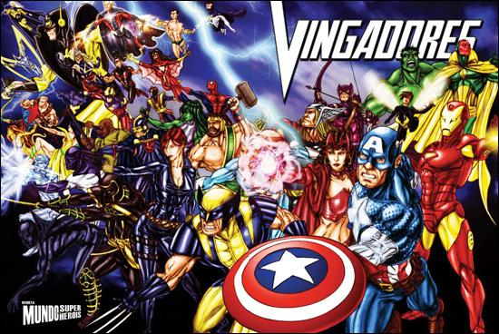

"Com grandes poderes, vêm grandes responsabilidades!"
Stan Lee: 1922 - 2018
A equipe dos Vingadores foi criada em 1963 por Stan Lee, Jack Kirby e Dick Ayers e diferente dos outros grupos de heróis da Marvel (Quarteto Fantástico e X-Men), eles foram os primeiros a receber reconhecimento oficial do governo americano na história.
Os Vingadores foram reunidos com a ideia de serem os “Heróis mais Poderosos da Terra” e por isso possuem contatos com humanos, inumanos, heróis mecânicos, vilões regenerados e seres sobrenaturais. As diferenças de personalidade dos heróis geralmente terminam em brigas, mas, de forma geral o grupo é muito harmônico quando se trata de combate às ameaças ao Planeta Terra. O grito de guerra dos Vingadores é “Avante, Vingadores!”.
O grupo dos Vingadores teve várias formações, o grupo original (citado acima) é conhecido como “membros fundadores” e são responsáveis pelo bom nome da equipe. O principal marco da história dos Vingadores é quando todos os membros deixam a equipe, com exceção do Capitão América que, para não deixar o grupo morrer, se reúne com Gavião Arqueiro, Feiticeira Escarlate e Mercúrio, todos ex-vilões que gostariam de começar uma nova vida sem crimes.
Outra fase muito importante na história dos Vingadores foi quando o vilão Massacre, uma entidade psíquica formada pelas frustrações de Charles Xavier ligadas à essência maligna de Magneto tentou dominar a Terra. Os Vingadores então se reuniram com o Quarteto Fantástico, Hulk, X-Men e Dr. Destino.
Após inúmeras aventuras juntos e separados, ocorre um dos maiores problemas na “vida” dos Vingadores. Após um colapso mental, a Feiticeira Escarlate destrói a mansão dos Vingadores e mata o Homem-Formiga, o Gavião Arqueiro e Visão. Depois deste acontecimento, os Vingadores se separaram completamente. Após este período de queda, o Homem de Ferro e o Capitão América decidem começar tudo de novo e recrutam o Homem-Aranha, Wolverine, Mulher-Aranha e Luke Cage. Posteriormente entram para a equipe o Sentinela e Eco (sob a identidade secreta Ronin).
Enfim, o que mais os Vingadores tiveram foram diferenciadas formações, mas a ideia sempre foi defender a Terra de todas as ameaças humanas ou não-humanas. O caso é que conteúdo para fazer 1000 filmes sobre os Vingadores a Marvel tem, e do jeito que ela e a DC resolveram brigar nos cinemas neste século, estamos feitos…é quase uma garantia de muitas aventuras ainda nas telonas. Vamos aguardar os Vingadores em breve nos cinemas…para os que ainda não viram Capitão América, esperem até o final dos créditos…a cena extra é exatamente uma “pequenina” amostra do que nos espera em “Os Vingadores”.
